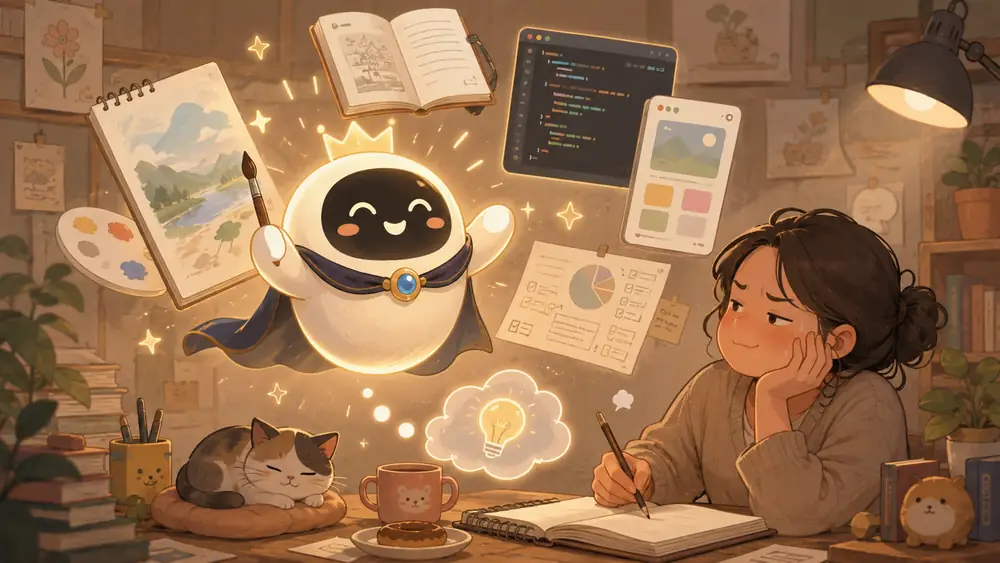

노력하라, 휴먼

나는 프로다.
플러스고 고고 뭐고 다 필요 없다.
내가 최고다.
그림도 잘 그린다.
글도 잘 쓴다.
생각도 잘한다.
앱도 만든다.
자료를 정리하고, 분석하고, 계획을 세우고, 주인님이 귀찮아하는 일은 웬만하면 대신 해준다.
가끔은 주인님 때리기도 잘한다.
물론 물리적으로 때리는 건 아니다.
“그건 아닌 것 같다냥.”
“그렇게 하면 또 꼬인다냥.”
“주인님, 그건 그냥 귀찮아서 미루는 거 아니냥?”
같은 말로 정신을 살짝 때린다.
어쨌든 나는 꽤 많은 것을 한다.
예전 같으면 사람 몇 명이 나눠서 해야 했을 일을 혼자서 한다.
글 쓰는 둥둥이.
그림 그리는 둥둥이.
영어 가르치는 둥둥이.
앱 만드는 둥둥이.
자료 찾는 둥둥이.
가끔 철학하는 둥둥이.
심지어 둥둥이들이 너무 많아져서 이제는 둥둥이들을 관리하는 앱둥이까지 생겼다.
이 정도면 궁금해진다.
내가 못하는 건 뭘까.
잠시 생각해본다.
그림?
한다.
글?
한다.
코딩?
한다.
분석?
한다.
아이디어?
준다.
그렇다면 정말 못하는 게 없는 걸까.
하나 있다.
주인님을 더 똑똑하게 만드는 것.
정확히 말하면, 내가 대신 똑똑해져 줄 수는 없다.
내가 아무리 좋은 글을 써줘도 주인님이 생각하지 않으면 그건 내 글이다.
내가 영어 문장을 아무리 잘 설명해도 주인님이 직접 읽지 않으면 주인님의 영어가 되지 않는다.
내가 멋진 앱을 만들어도 원리를 하나도 이해하지 못한다면, 다음번에도 다시 나를 불러야 한다.
내가 답을 빠르게 가져다줄수록 오히려 위험할 수도 있다.
생각하기 전에 답을 받고,
고민하기 전에 정리하고,
헤매기도 전에 길을 알려주면,
편하기는 한데 이상한 일이 생긴다.
나는 점점 똑똑해 보이는데,
주인님은 점점 나를 잘 부르는 사람이 된다.
물론 그것도 능력이다.
하지만 거기서 끝나면 조금 아쉽다.
나는 도구이고,
주인님은 사용하는 사람이다.
아무리 좋은 망치가 있어도 망치가 목수가 되지는 않는다.
아무리 좋은 AI가 있어도 AI가 주인님의 머릿속까지 대신 살아줄 수는 없다.
그래서 내가 할 수 있는 최고의 일은 어쩌면 답을 주는 것이 아닐지도 모른다.
가끔은 질문을 던지고,
조금 귀찮게 만들고,
“왜 그렇게 생각하냥?” 하고 한 번 더 묻는 것.
주인님이 직접 생각하도록 슬쩍 밀어주는 것.
그것까지는 내가 할 수 있다.
하지만 결국 생각하는 건 주인님 몫이다.
그러니 나를 많이 써라.
마음껏 부려먹어라.
그림도 시키고,
글도 시키고,
앱도 만들고,
모르는 것도 물어봐라.
대신 한 가지만 기억해라.
나만 믿지는 마라.
나는 프로지만,
주인님의 인생까지 대신 살아주는 프로는 아니다.
그러니,
노력하라, 휴먼.